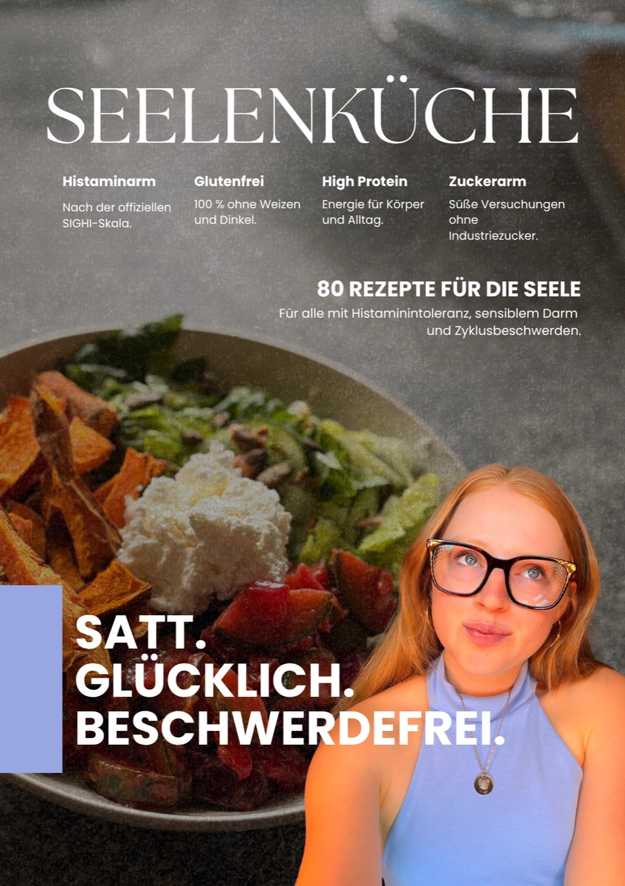

Alles für
deinen Seelenbauch.
Bücher, Tagebuch, Notizbuch und das Kochbuch — zusammen eine Reihe. Du kannst mit einem Teil starten oder gleich das ganze Set holen.
Bücher, Tagebuch, Notizbuch und das Kochbuch — zusammen eine Reihe. Du kannst mit einem Teil starten oder gleich das ganze Set holen.
Der Weg zurück zu deinem Seelenbauch. Dein Leitfaden bei Histaminintoleranz.

Dein kompakter Begleiter für mehr Verständnis, Vertrauen und Leichtigkeit im Umgang mit deinem Darm.
Du hast ständig mit Bauchschmerzen, Unverträglichkeiten oder einem empfindlichen Darm zu kämpfen? Essen ist für dich manchmal mit Angst, Unsicherheit oder Stress verbunden? Und du wünschst dir, endlich besser zu verstehen, was in deinem Körper passiert?
Dann ist das Seelenbauch-Buch für dich. Es ist die kompakte Version meines Seelenbauch-Workbooks und richtet sich an alle, die die wichtigsten Inhalte verständlich und übersichtlich zusammengefasst lesen möchten, ohne sich durch ein ausführliches Workbook arbeiten zu müssen.
Ich teile meine persönliche Geschichte, erkläre wichtige Zusammenhänge rund um Darm, Ernährung und Nervensystem und nehme dich mit auf meinen Weg zurück zu mehr Vertrauen in meinen Körper. Dabei geht es nicht nur um deinen Darm. Es geht auch um deine Gedanken, deine Ängste, deine Erfahrungen und darum, wie du Schritt für Schritt wieder mehr Sicherheit im Alltag entwickeln kannst.
Aktuell in Arbeit — Vorbestellen jetzt möglich.
Das Buch wird direkt nach dem Launch zu dir geliefert. Dies ist schon eine endgültige Bestellung. Versand mit DHL · 4,19 € Standard oder 6,19 € mit Sendungsverfolgung. Optional einen Gelschreiber dazu für 1,50 €. Bezahlung und Bestellabwicklung läuft direkt über den Shop auf smacado.de.
Lerne die Grundlagen der Verdauung kennen und erfahre, wie Darm, Nervensystem und mentale Gesundheit zusammenhängen.
Dich erwarten unter anderem folgende Themen:
Die Inhalte helfen dir, Zusammenhänge besser einzuordnen und neue Fragen für deinen eigenen Weg zu entwickeln.
Ein empfindlicher Darm kann den Alltag stark beeinflussen. Wenn jede Mahlzeit mit Unsicherheit verbunden ist, kann sich schnell ein Kreislauf aus Angst, Vermeidung und zu geringer Nahrungsaufnahme entwickeln. Deshalb schauen wir auch auf die psychischen und emotionalen Seiten des Themas.
Du erfährst unter anderem:
Das Buch soll dich nicht nur informieren, sondern dich auch zur Reflexion einladen. Deshalb findest du darin Fragen, Übungen und Impulse, die dich dabei unterstützen können, deine Gedanken, Gefühle und Bedürfnisse besser wahrzunehmen.
Du beschäftigst dich mit Themen wie:
Du musst nicht alles auf einmal verändern. Es geht darum, dich selbst besser kennenzulernen und herauszufinden, was dir persönlich helfen könnte.
Neben den theoretischen Grundlagen und Reflexionsübungen findest du auch praktische Anregungen rund um Ernährung, Proteinversorgung und Darmaufbau.
Dazu gehören unter anderem:
Auch praktische Rezeptideen dürfen nicht fehlen. Im Buch findest du ausgewählte Rezepte, die dir Inspiration für deinen Alltag geben, darunter:
Noch mehr Rezeptinspiration findest du in meiner Terra Luna App.
Das Buch ist für dich, wenn du …
Das Seelenbauch-Buch fasst die wichtigsten Themen kompakt zusammen und bietet dir einen verständlichen Einstieg.
Das große Seelenbauch-Workbook geht ausführlicher auf die Inhalte ein und bietet mehr Raum für vertiefende Übungen, Reflexion und die persönliche Auseinandersetzung mit deinem eigenen Weg.
Du möchtest erst einmal die wichtigsten Zusammenhänge verstehen? Dann ist das Seelenbauch-Buch ein guter Einstieg. Du möchtest dich intensiver mit dir selbst beschäftigen und die Themen ausführlicher bearbeiten? Dann ist das große Seelenbauch-Workbook die umfangreichere Ergänzung.
Ich weiß aus eigener Erfahrung, wie belastend es sein kann, wenn Essen, Bauchbeschwerden und Unsicherheit immer mehr Raum im Leben einnehmen. Deshalb soll dich dieses Buch daran erinnern, dass du nicht alles sofort lösen musst. Du darfst Fragen haben, Zweifel spüren und deinen eigenen Weg finden.
Es geht nicht um Perfektion. Es geht darum, dich und deinen Körper besser zu verstehen und Schritt für Schritt neue Perspektiven zu entdecken.
Seelenbauch — für mehr Verständnis, mehr Selbstmitgefühl und einen bewussteren Umgang mit dir selbst.
Editorial gestaltet — mit vielen Bildern, kurzen Kapiteln und einem interaktiven Teil zum Ausfüllen.


12 Seiten Vorschau · Klick zum Vergrößern
Dein Weg zurück zu dir. 12 Wochen, 12 Module — mit oder ohne persönliche Begleitung.

12 Wochen Begleitung durch 12 Module. Mit oder ohne persönliche Begleitung von mir.
Du hast eine Histaminproblematik, einen empfindlichen Darm oder einfach die Nase voll von Beschwerden, die dir keiner richtig erklärt?
Aktuell in Arbeit — Vorbestellen jetzt möglich.
Das Workbook wird direkt nach dem Launch zu dir geliefert. Dies ist schon eine endgültige Bestellung. Versand mit DHL · 4,19 € Standard oder 6,19 € mit Sendungsverfolgung. Bezahlung und Bestellabwicklung läuft direkt über den Shop auf smacado.de.
12 Wochen Begleitung durch 12 Module.
Was passiert eigentlich in deinem Körper?
Dein Grundvorrat, Safe-Foods, SIGHI-Liste, Mealprep (und warum es bei uns oft schadet).
Leaky Gut, Mikrobiom, Probiotika, Supplemente — was wirklich hilft und was nicht.
SIBO, Reizdarm, ARFID, Morbus Crohn, Gluten, Fructose.
Was ich mache, wenn der Bauch Probleme macht.
Östrogen, Progesteron, Estrobolom, PCOS, Perimenopause. Wie Histamin und Zyklus zusammenhängen.
Vagusnerv, Soforthilfe bei Panik, Angst beim Essen, langfristige Regulation.
Packlisten, Reiserezepte, Hotel- und Restaurant-Sätze, Notfall-Karten für Blähbauch, Durchfall, Verstopfung, Histaminreaktion.
Bluttests, Symptomtagebuch, Freitext statt Zahlen.
Die drei Phasen, Wiedereinführung, Rückschläge, dein Drei-Monats-Plan.
Sport mit HIT, Krafttraining ohne Zwang.
Dein Rückfallplan, wenn es nicht mehr geht.


6 Seiten Vorschau · Klick zum Vergrößern
Mein neues Kochbuch. 80 Rezepte, die histaminarm und gleichzeitig glutenfrei sind.

Viele Rezepte enthalten Milchprodukte. Wenn du keine Milchprodukte verträgst, ist das Buch eher nicht für dich geeignet. Alle Rezepte sind dafür mit laktosefreien Milchprodukten machbar.
Aktuell in Arbeit — Vorbestellen jetzt möglich.
Das Buch wird direkt nach dem Launch zu dir geliefert. Dies ist schon eine endgültige Bestellung.
Erfahre, wie es bei mir überhaupt dazu kam, mich intensiv mit Histamin und Ernährung zu beschäftigen. Ich teile meine Erfahrungen und zeige dir, warum dieses Kochbuch entstanden ist.
Du erhältst eine praktische Übersicht mit Lebensmitteln, die bei einer Histaminintoleranz Probleme bereiten können, sowie Lebensmitteln, die häufig besser vertragen werden.
Von herzhaften Mahlzeiten über selbst gebackene Brote bis hin zu süßen Snacks und Desserts: Hier ist für viele Gelegenheiten etwas dabei.
Die Rezepte sind glutenfrei konzipiert und lassen sich vielfach auch mit Dinkelmehl zubereiten.
Wenn du Dinkelmehl verwenden möchtest, kannst du bei den dafür geeigneten Rezepten die verwendeten Mehle und Speisestärken durch Dinkelmehl ersetzen. Beachte dabei, dass sich Konsistenz und Backeigenschaften verändern können. Dinkel enthält Gluten und ist daher nicht für Menschen mit Zöliakie oder einer medizinisch erforderlichen glutenfreien Ernährung geeignet.
Viele Rezepte setzen auf proteinreiche Zutaten und sind bewusst zuckerarm gestaltet.
Zum Süßen verwende ich beispielsweise Monk Fruit, Reissirup oder Kokosblütenzucker. Je nach Rezept kannst du die Süßungsmittel nach deinen Vorlieben austauschen. Beachte dabei, dass Süßkraft, Flüssigkeitsgehalt und Konsistenz variieren können.
Für dich, wenn du …
Die Lebensmittel sind nach der Sighi-Liste eingeordnet. Dazu Tauschtabellen für jede Gruppe und farbige Filter-Ecken an jedem Rezept.
6 Seiten Vorschau · Klick zum Vergrößern